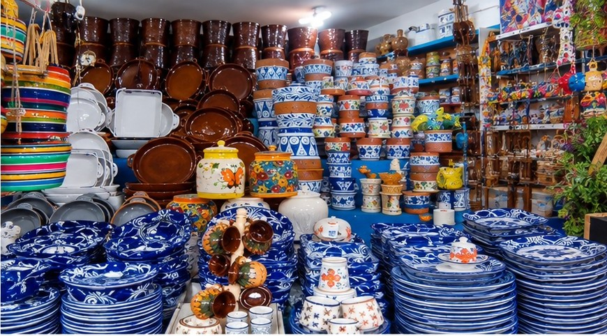
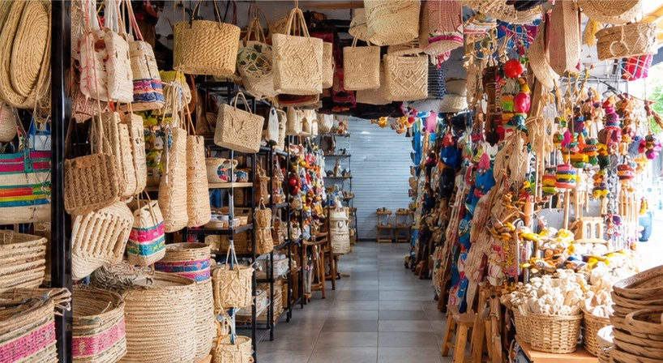

MERCADO ARTESANAL

El Mercado de Artesanías de Valle de Bravo se encuentra ubicado sobre la avenida Benito Juárez, en la zona de San Antonio, cerca del Centro de Valle de Bravo.
En su interior hay diferentes locales donde se ofrecen artesanías, artículos de barro, cerámica, textiles, ropa y productos típicos de la región. Este mercado es un lugar atractivo para los visitantes, ya que permite conocer y adquirir productos artesanales, además de disfrutar de un espacio que refleja las tradiciones y la identidad cultural de Valle de Bravo.
CERÁMICAS

En este puesto del Mercado podemos encontrar una gran variedad de artículos elaborados de barro y cerámica. Como son, platos de diferentes tamaños, cazuelas, ollas, tazas, jarras, macetas, charolas y recipientes para guardar alimentos. Algunos tienen diseños de flores y figuras pintadas a mano, mientras que otros presentan decoraciones de color azul con blanco, café, amarillo, naranja y verde. También se pueden apreciar vajillas completas y piezas acomodadas en grandes cantidades, lo que permite observar la variedad de productos que ofrecen a los visitantes.
Este lugar es atractivo para las personas que buscan artículos tradicionales para el hogar o recuerdos de su visita a Valle de Bravo. Los productos no solamente sirven para cocinar y presentar alimentos, sino también para decorar diferentes espacios. Sus colores, formas y diseños hacen que el puesto sea muy llamativo y permiten conocer un poco más sobre las artesanías que forman parte de la cultura y las tradiciones de la región.
CANASTAS Y PRODUCTOS ARTESANALES

En este otro puesto del Mercado de Valle de Bravo se encuentran diferentes productos artesanales elaborados con fibras naturales y materiales tejidos. En el cual podemos encontrar bolsas de mano, canastas, cestos, tapetes, recipientes, sombreros y artículos decorativos de distintos tamaños y formas. La mayoría de estos productos son de colores naturales como beige, crema y café, aunque algunos tienen detalles de colores como rosa, azul, verde y rojo.
Este lugar llama la atención por la cantidad de artesanías que tiene exhibidas y por la variedad de diseños que se pueden encontrar. Algunos artículos son utilizados para guardar objetos, transportar compras o decorar las casas, mientras que otros son ideales como recuerdos. Es un espacio donde se puede apreciar el trabajo y la creatividad de las personas que elaboran estos productos, además de conocer parte de las tradiciones artesanales que se conservan y se comercializan en Valle de Bravo.